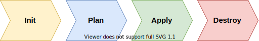
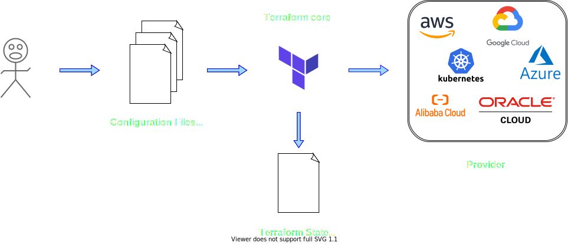

Terraform - Lessons Learned
https://github.com/R0bes/Terraform-Presentation
By Robin Schwendele
Terraform - Agenda
- Introduction
- Me
- The IoT Project
- Terraform
- 1. Basics
- 2. Custom Resources
- 3. Modules
- 4. Backends
- 5. Summary
- 6. Conclusion
- 7. Questions/Comments
About Me
- Robin Schwendele
- Working student since 10/2020
- Bachelor Computer Science (Mannheim)
- Student of Master Software-Engineering (Mannheim)
A practical IoT cloud journey
Terraform
- Provisioning Tool
- By HashiCorp
- Infrastructure as Code
- Declarative
- Plugin-based architecture model
- HCL (Hashicorp Configuration Language)
- Written in Golang
- Open Source
Commands
Workflow
Provider Registry 1. Terraform Basics
What we will see:
- Example Terraform File (.tf)
- Syntax Basics
- Terraform Execution
- Resource in the Cloud
1. Terraform Basics
provider "azurerm" {
features {}
}
resource "azurerm_resource_group" "example" {
name = "demo1"
location = "westeurope"
}
resource "azurerm_public_ip" "example" {
name = "${azurerm_resource_group.example.name}-ip"
resource_group_name = azurerm_resource_group.example.name
location = azurerm_resource_group.example.location
allocation_method = "Static"
}
1. Terraform Basics - Demo
1. Terraform Basics
What we saw
- Terraform File
- State File
- Terraform Workflow via command line
- Cloud Representation
2. Custom Resource
Digital Twin
Practical IoT-Cloud-Journey
2. Custom Resource
- Prerequisites
- Resource Group:
demo2 - IoT-Hub:
demo2-hub
- Resource Group:
What we will see:
- Allocation of digital twins
- Via Azure CLI
- Via Custom Terraform Resource
2. Custom Resource
After terraform apply via Azure CLI
az login
az iot hub device-identity create -n 'demo2-hub' -d 'demo2-device'
2. Demo - Custom Resource
Custom Script in Terraform via local execution provisioner
resource "null_resource" "device_twin" {
provisioner "local-exec" {
when = create
interpreter = ["pwsh" , "-Command"]
command = az iot hub device-identity create -n 'demo2-hub' -d 'demo2-device'
}
}
- Interpreter must be installed and accessible
- az login must be executed before terraform apply
2. Demo - Custom Resource
Similar task to destroy
resource "null_resource" "device_twin" {
provisioner "local-exec" {
when = destroy
interpreter = ["pwsh" , "-Command"]
command = az iot hub device-identity delete -n 'demo2-hub' -d 'demo2-device'
}
}
2. Demo - Custom Resource
And together
resource "null_resource" "device_twin" {
provisioner "local-exec" {
when = create
interpreter = ["pwsh" , "-Command"]
command = az iot hub device-identity create -n 'demo2-hub' -d 'demo2-device'
}
provisioner "local-exec" {
when = destroy
interpreter = ["pwsh" , "-Command"]
command = az iot hub device-identity delete -n 'demo2-hub' -d 'demo2-device'
}
}
2. Demo - Custom Resource
Problem: Destroy time provisioner cannot access variables
variable "device_name" {}
resource "null_resource" "device_twin" {
provisioner "local-exec" {
when = create
interpreter = ["pwsh" , "-Command"]
command = az iot hub device-identity create -n 'demo2-hub' -d '${var.device_name}'
}
provisioner "local-exec" {
when = destroy
interpreter = ["pwsh" , "-Command"]
command = az iot hub device-identity delete -n 'demo2-hub' -d '${var.device_name}'
}
}
2. Demo - Custom Resource
Solution: Triggers can retain data you need at destroy time
variable "device_name" {}
resource "null_resource" "device_twin" {
triggers = { name = var.device_name }
provisioner "local-exec" {
when = create
interpreter = ["pwsh" , "-Command"]
command = az iot hub device-identity create -n 'demo2-hub' -d '${self.triggers.name}'
}
provisioner "local-exec" {
when = destroy
interpreter = ["pwsh" , "-Command"]
command = az iot hub device-identity delete -n 'demo2-hub' -d '${self.triggers.name}'
}
}
2. Demo - Custom Resource
variable "device_name" {}
resource "null_resource" "device_twin" {
triggers = {
hub = azurerm.iothub.my_hub.name
name = var.device_name
}
provisioner "local-exec" {
...
command = az iot hub device-identity create -n '${self.triggers.hub}' -d '${self.triggers.name}'
}
provisioner "local-exec" {
...
command = az iot hub device-identity delete -n '${self.triggers.hub}' -d '${self.triggers.name}'
}
}
2. Demo - Custom Resource
2. Demo - Custom Resource
What we saw
- Custom local Script in terraform via 'local-exec provisioner'
- create and destroy time provisioners
- triggers as intermediate variable
3. Modules
- 'Container' to group multiple resources
-
- Input variables
- Output values
- Resources to define infrastructure objects
- Placed in its own directory
3. Modules
What we will see:
- Device twin resource from demo 2
- Improvements in script to handle errors
- Implement as module
- Usage
3. Modules
Current device twin resource (demo2)
variable "device_name" {}
provider "azurerm" {...}
resource "azurerm_resource_group" "demo3" {...}
resource "azurerm_iothub" "my_hub" {...}
resource "null_resource" "device_twin" {
triggers = {...}
provisioner "local-exec" { when = create ... }
provisioner "local-exec" { when = delete ... }
}
3. Modules
variable "device_name" {}
provider "azurerm" {...}
resource "azurerm_resource_group" "demo3" {...}
resource "azurerm_iothub" "my_hub" {...}
module "device_twin" {
source = "./Device"
name = "demo3-device"
iot_hub = "demo3-hub"
}
3. Modules - Demo
3. Modules - Demo
What we saw
- Module directory structure
- Module usage
4. Backends
- One backend per configuration
- Defines where and how
- operations are performed
- states stored
4. Backends
terraform {
backend "local" { }
}
terraform {
backend "azurerm" {
resource_group_name = "demo4_state-storage"
storage_account_name = "demo4account"
container_name = "demo4container"
key = "demo4.tfstate"
}
}
4. Backends - Demo
What we will see:
- Backend storage structure
- Remote State stored in the cloud
4. Backends - Demo
4. Backends
Problem: One backend per configuration
- Switching between different backends?
- Local for developement/experiments
- Remote for production/pipelines
Solution: Whole infrastructure as module
5. Summary
Initial approach
- Pipeline: 245 + 147
- Terraform: 364
Changes applied
- Pipeline: 180
- Terraform: 320 + (117 + 54 + 49 + 60) = 600
6. Conclusion
- Great tool for infrastructure provisioning
- Especially in combination with pipelines
- In active developement (terraform/providers)
- Some missing functionalities
- Built in configuration switching
- Provider functionality/resources
- Flexible enough to built custom workarounds
- Local-exec provisioners
- Custom provisioners